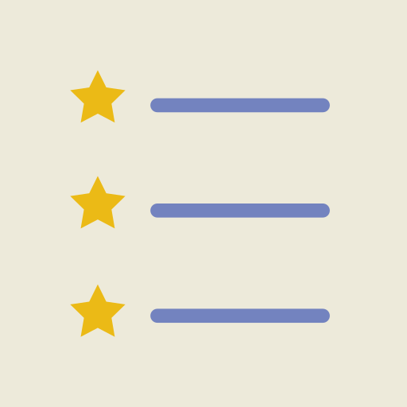

<!-- <ion-header>
  <ion-toolbar>
    <h2>
      
     
    </h2>
  </ion-toolbar>
</ion-header> -->

<ion-content>
  <!-- <ion-card>
    
    <ion-card-content>
      <ion-item>
        <ion-label>מה אני רוצה להספיק?</ion-label>
        <ion-input type="text" [(ngModel)]="nameProduct"></ion-input>
      </ion-item>
      <ion-item>
        <ion-label>מתאריך</ion-label>
        <ion-datetime></ion-datetime>
      </ion-item>
      <ion-item>
        <ion-label>עד תאריך</ion-label>
        <ion-datetime [(ngModel)] ="dateStart"></ion-datetime>

      </ion-item>
      <ion-item>
        <ion-label>נמצא בקטגוריה</ion-label>
        <ion-select required okText="בחר" cancelText="בטל" (ionChange)="categorySelected(item)"
          [(ngModel)]="nameCategory">
          <ion-select-option *ngFor="let item of Categories">{{item.nameCategory}}
          </ion-select-option>
        </ion-select>
      </ion-item>


      <ion-item>


        <ion-label>בחר מרחק לחיפוש</ion-label>
      </ion-item>
      <ion-item style="direction: ltr;">
        <ion-label>0</ion-label>
        <ion-range [ngModelOptions]="{standalone: true}" [(ngModel)]="distance" min="0" max="3000" color="primary"
          pin="true"></ion-range>
        <ion-label>3000</ion-label>
      </ion-item>
      <ion-button id="h" color="primary" name="search" fill="outline" expand="block" (click)="searchItem()">הפעל חיפוש
      </ion-button>

    </ion-card-content>
  </ion-card> -->

 <h2 class="">     מטלות שלי</h2>
 <ion-button (click)="presentActionSheet()" expand="block" color="secondary" >סנן</ion-button>
  <ion-list> 
    <ion-item><ion-label color="primary" class="l"> מטלה</ion-label>
    <!-- <ion-label color="primary" class="l">קטגוריה</ion-label>
    <ion-label color="primary" class="l">חנות</ion-label>-->
    <ion-label color="primary" class="l">סטטוס</ion-label> 
    <ion-label color="primary" class="l">פרטים</ion-label> 
    <ion-label color="primary" class="l">מחק </ion-label>
  </ion-item>

    <ion-item *ngIf="this.searchService && this.searchService.searchesForHistory && this.searchService.searchesForHistory.length" *ngFor="let item of this.searchService.searchesForHistory ;let i=index">
      <ion-label>
        <p title="{{item.nameProduct}}">{{item.NameProduct}}</p>
      </ion-label>
      <!-- <ion-label>
        <p title="{{item.nameCategory}}">{{item.nameCategory}}</p>
      </ion-label> -->
      <!-- <ion-label>
        <p title="{{item.nameShop}}">{{item.nameShop}}</p>
      </ion-label> -->
      <ion-label>
        <p>{{this.searchService.statusDict[item.Status]}}</p>
      </ion-label>
      <ion-label>
        <ion-button id="b" fill="more" color="medium" (click)="showDetails(item)">
          <ion-icon name="more" slot="icon-only" md="md-more"></ion-icon>
        </ion-button>
      </ion-label>
      <ion-label>
        <ion-button id="b" fill="clear" color="medium" (click)="remove(item)">
          <ion-icon name="trash" slot="icon-only" md="md-trash"></ion-icon>
        </ion-button>
      </ion-label>

    </ion-item>
    <ion-item *ngIf="!(this.searchService && this.searchService.searchesForHistory && this.searchService.searchesForHistory.length)">
    <ion-label class="no-data">אין נתונים</ion-label>
  </ion-item>
  </ion-list>
  <!-- <ion-fab vertical="top" horizontal="end" slot="fixed">
    <ion-fab-button  fill="outline" title="סנן">
      <ion-icon name="search"></ion-icon>
    </ion-fab-button>

    <ion-fab-list side="bottom" style="align-items: stretch;">
      <ion-button (click)="getFound()">נמצאו</ion-button>
      <ion-button  (click)="getNotFound()">לא נמצאו</ion-button>
      <ion-button  (click)="getTimeOver()">פג תוקף</ion-button>
      <ion-button  (click)="getTimeWait()">עדיין לא בתוקף</ion-button>
      <ion-button  (click)="getAll()">הכל</ion-button>
    </ion-fab-list>
  </ion-fab> -->

</ion-content>